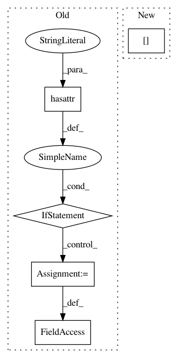

023331ec2a7b0086abfc81eca16c84a1692ee653,keras/engine/topology.py,Layer,__init__,#Layer#,288
Before Change
self._trainable_weights = []
if not hasattr(self, "_non_trainable_weights"):
self._non_trainable_weights = []
if not hasattr(self, "losses"):
self.losses = []
if not hasattr(self, "constraints"):
self.constraints = {} // dict {tensor: constraint instance}
self.built = False
After Change
batch_input_shape = tuple(kwargs["batch_input_shape"])
elif "input_shape" in kwargs:
if "batch_size" in kwargs:
batch_size = kwargs["batch_size"]
else:
batch_size = None
batch_input_shape = (batch_size,) + tuple(kwargs["input_shape"])
self.batch_input_shape = batch_input_shape
In pattern: SUPERPATTERN
Frequency: 3
Non-data size: 5
Instances
Project Name: keras-team/keras
Commit Name: 023331ec2a7b0086abfc81eca16c84a1692ee653
Time: 2017-02-09
Author: francois.chollet@gmail.com
File Name: keras/engine/topology.py
Class Name: Layer
Method Name: __init__
Project Name: raghakot/keras-vis
Commit Name: 2443550ee6915daf6e7ff6306f3dc2922752ea4b
Time: 2017-07-09
Author: ragha@outlook.com
File Name: vis/backend/tensorflow_backend.py
Class Name:
Method Name: modify_model_backprop
Project Name: microsoft/nni
Commit Name: 2de52a8976971da4836727ba9242fedcc7474878
Time: 2020-01-16
Author: 656569648@qq.com
File Name: src/sdk/pynni/nni/compression/torch/compressor.py
Class Name: Pruner
Method Name: export_model